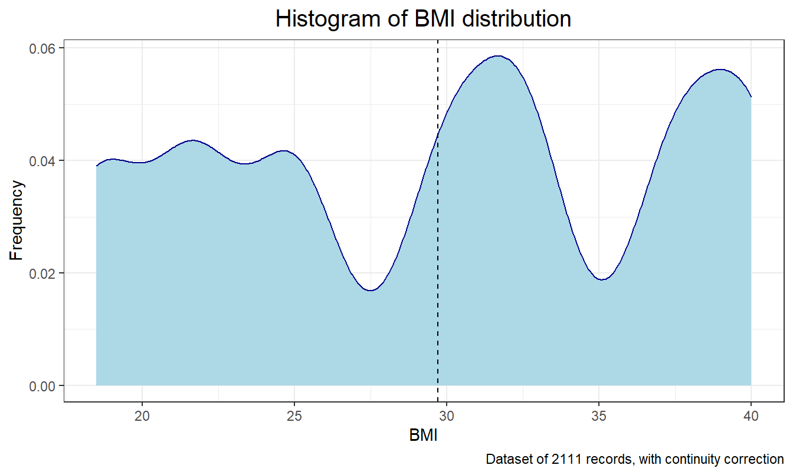
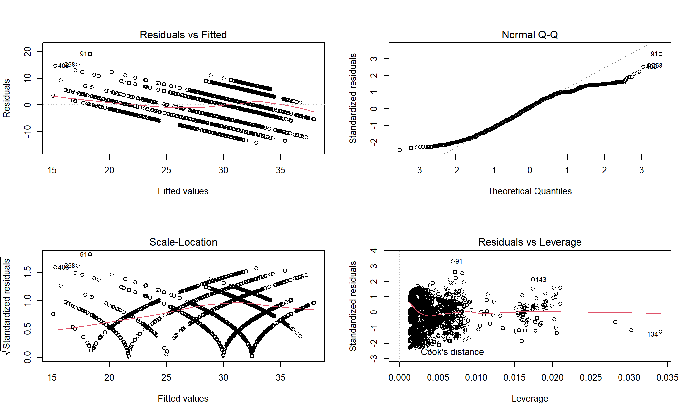
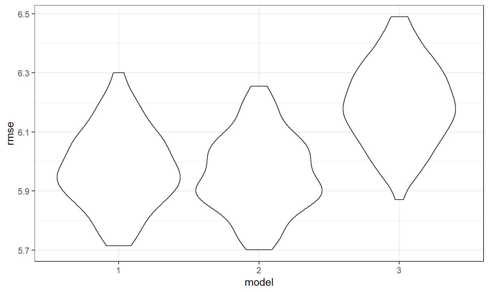

The data about the estimation of obesity levels in people from the countries of Mexico, Peru and Colombia, with ages between 14 and 61 and diverse eating habits and physical conditions.
This data was collected using a web platform with a survey where anonymous users answered each question, then the information was processed obtaining 17 attributes and 2111 records.
## # A tibble: 6 x 7
## bmi gender age fml_his favc calc faf
## <dbl> <fct> <dbl> <fct> <fct> <fct> <dbl>
## 1 21.7 Female 21 yes no no 0
## 2 21.7 Female 21 yes no Sometimes 3
## 3 21.7 Male 23 yes no Frequently 2
## 4 25 Male 27 no no Frequently 2
## 5 30 Male 22 no no Sometimes 0
## 6 21.7 Male 29 no yes Sometimes 0Variables
favc: Frequent consumption of high caloric foodcalc: Consumption of alcoholfaf: Physical activity frequencyfml_his: Family history with overweighAdjustments
To conduct linear regression, the outcome should be numeric variables, so we convert variable recording obesity condition, such as Normal_weight and Obesity_Type_I to BMI 21.7 and 32.5 according to BMI and weights relationships from CDC guildlines. Since each weight condition has a BMI range like “25-30”, we assume that people with a weight status has an average BMI, that is 27.5.


| term | estimate | std.error | statistic | p.value |
|---|---|---|---|---|
| (Intercept) | 5.2816517 | 5.9311143 | 0.8904991 | 0.3733002 |
| genderMale | -0.5779571 | 0.2619838 | -2.2060796 | 0.0274866 |
| age | 0.2134598 | 0.0209753 | 10.1767429 | 0.0000000 |
| fml_hisyes | 8.6139089 | 0.3459540 | 24.8990010 | 0.0000000 |
| favcyes | 4.8871227 | 0.9899786 | 4.9365945 | 0.0000009 |
| calcFrequently | 8.0942787 | 6.5434278 | 1.2370089 | 0.2162224 |
| calcno | 10.6774490 | 5.9748891 | 1.7870539 | 0.0740733 |
| calcSometimes | 10.0057400 | 5.8348066 | 1.7148366 | 0.0865231 |
| faf | -0.3461937 | 0.6082679 | -0.5691468 | 0.5693175 |
| favcyes:calcFrequently | -2.4449866 | 3.2416359 | -0.7542447 | 0.4507871 |
| favcyes:calcno | -4.3055502 | 1.3725209 | -3.1369652 | 0.0017308 |
| favcyes:faf | -0.6411891 | 0.6438156 | -0.9959205 | 0.3194038 |
| calcFrequently:faf | 0.3880361 | 1.6017398 | 0.2422591 | 0.8086031 |
| calcno:faf | -0.1349497 | 0.8266805 | -0.1632428 | 0.8703430 |
| favcyes:calcFrequently:faf | 0.4599959 | 1.8327566 | 0.2509858 | 0.8018497 |
| favcyes:calcno:faf | 0.2944979 | 0.8965927 | 0.3284634 | 0.7425941 |
The cross validation requires all predictors to be numeric variables, so we transform variables gender, fml_his, favc, calc to numeric ones. Since we need to know rmse (root mean square error) distributions of models, and basic trends of BMI influenced by variables, the addjustment is acceptable.
Violin plot of RMSEs.

Model 1 and model 3, nested data
## Analysis of Variance Table
##
## Model 1: bmi ~ gender + age + fml_his
## Model 2: bmi ~ gender + age + fml_his + favc + calc + faf
## Res.Df RSS Df Sum of Sq F Pr(>F)
## 1 2107 79895
## 2 2102 72077 5 7818.2 45.601 < 2.2e-16 ***
## ---
## Signif. codes: 0 '***' 0.001 '**' 0.01 '*' 0.05 '.' 0.1 ' ' 1## # A tibble: 3 x 3
## aic_1 aic_2 aic_3
## <kntr_kbl> <kntr_kbl> <kntr_kbl>
## 1 | AIC| | AIC| | AIC|
## 2 |-------:| |--------:| |--------:|
## 3 | 13463.8| | 13452.37| | 13671.19|With this many factor levels, it really isn’t a good idea to fit models with main effects or interactions for each. Instead, you’d be best-off using a mixed model, with random intercepts and slopes for each factors.
## # A tibble: 7 x 6
## effect group term estimate std.error statistic
## <chr> <chr> <chr> <dbl> <dbl> <dbl>
## 1 fixed <NA> (Intercept) 22.1 0.447 49.3
## 2 fixed <NA> genderMale -0.991 0.272 -3.64
## 3 fixed <NA> fml_hisyes 7.99 2.11 3.79
## 4 ran_pars favc sd__(Intercept) 0.420 NA NA
## 5 ran_pars favc cor__(Intercept).fml_hisyes 1.00 NA NA
## 6 ran_pars favc sd__fml_hisyes 2.93 NA NA
## 7 ran_pars Residual sd__Observation 6.21 NA NA